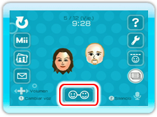
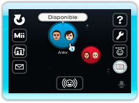
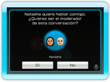
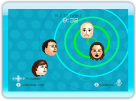

Para iniciar una conversación, sigue los pasos que se indican a continuación. En una conversación pueden participar hasta cuatro grupos de usuarios al mismo tiempo, con una consola Wii por cada grupo.
11 |
Iniciar una conversación |
 |
|
Nota: Si la persona con la que quieres hablar no está en el Canal Wii Speak, no podrás invitarla a una conversación. Intenten ponerse de acuerdo sobre la hora a la que van a hablar.
En la sala, selecciona .
 Ve a la antesala y selecciona el amigo Wii con el que quieres hablar o el moderador a cuya conversación te quieres unir (ver pág. 12. Unirse a una conversación). Nota: Oprime
Nota: Tras iniciar el canal, pueden transcurrir unos instantes hasta que tú y tus amigos Wii se vean unos a otros conectados en sus respectivas pantallas.
Después de seleccionar un amigo Wii, aparecerá un mensaje para confirmar que quieres enviar una solicitud de conversación. Selecciona Sí en el mensaje de confirmación.


Otro mensaje de confirmación aparecerá en la pantalla de la persona a la que has enviado la solicitud, quien podrá responder Sí o No. Si la persona que ha recibido la solicitud de conversación selecciona Sí, todos los participantes aparecerán en la sala y podrán comenzar a hablar. Si quieres ajustar el volumen durante una conversación, usa izquierda y derecha en
|
 |
 |